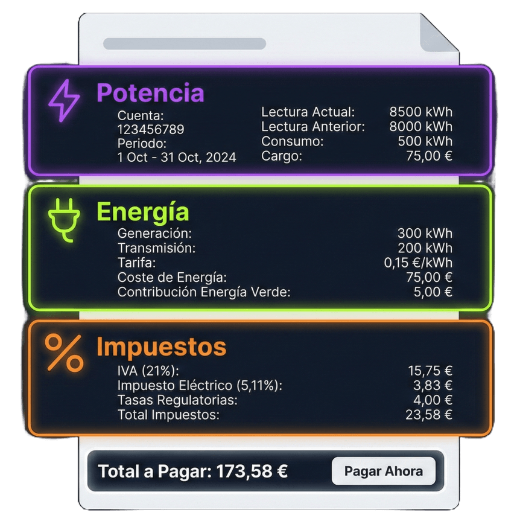

Los tres caminos: factura, CSV o a mano
Para comparar tarifas de verdad (no "a ojo") necesitas tus datos. Hay tres formas de conseguirlos, de menos a más precisa:
- Tu factura en PDF: la tienes en el email o en la app de tu compañía. De ahí salen potencia contratada, consumos por periodo y días del ciclo. Es el camino rápido y suficiente para la mayoría.
- Tu consumo horario (CSV): la curva real de tu contador, hora a hora. Con ella el comparador cruza cada hora de tu consumo con el precio que corresponde, y el resultado afina mucho más — sobre todo con PVPC y tarifas con discriminación horaria.
- A mano: si no tienes ni una cosa ni la otra, puedes introducir tu potencia y un consumo estimado. Menos fino, pero suficiente para una primera criba.
Sin registro y sin cuentas: tanto la factura como el CSV se procesan dentro de tu navegador. No se suben a ningún servidor, no se almacenan y nadie te va a llamar después. Ese es el trato.
Paso 1: consigue tus datos
La factura no tiene misterio: búscala en el email o descárgala de la app o web de tu comercializadora. Cuanto más reciente, mejor. Si quieres entender qué significa cada concepto antes de seguir, aquí tienes cómo leer tu factura paso a paso.
El CSV del consumo horario se descarga de Datadis o del portal de tu distribuidora (i-DE, e-Distribución, UFD, E-REDES...). El proceso varía según cuál te toque, y por eso tiene guía propia: cómo ver tu consumo horario real. Descarga al menos un año si puedes: así el cálculo recoge tu invierno y tu verano, no solo el mes que va a tu favor.
¿Cuál elegir? Si es tu primera vez, empieza por la factura. Si el resultado te convence y quieres rematar la decisión, vuelve con el CSV.
Paso 2: sube tu factura y revisa lo que se ha leído
En el comparador tienes el botón para subir la factura en PDF. El extractor lee el documento en tu navegador y rellena automáticamente potencia, consumos por periodo y fechas del ciclo. Si tu factura incluye el código QR de la CNMC, se usan sus datos, que son los que la propia comercializadora declara.
No te saltes la revisión. Antes de mirar el ranking, comprueba que lo extraído cuadra con tu factura:
- Potencia contratada (P1 y P2, en kW): es el error más caro si se cuela mal.
- Consumos por periodo (punta, llano y valle, en kWh): deben sumar aproximadamente tu consumo total del ciclo.
- Días del periodo: un ciclo de 28 días y uno de 33 no se comparan igual.
Cada compañía maqueta la factura a su manera y alguna vez un dato puede venir raro. Todos los campos son editables: si algo no cuadra, corrígelo a mano y listo.
Paso 3: afina con tu consumo horario (CSV)
La factura te da tres números de consumo (P1, P2, P3). El CSV te da la curva de consumo hora a hora. La diferencia práctica:
- Con PVPC, el comparador cruza tu consumo hora a hora con el precio horario publicado de cada día de tu CSV. No es una media: es tu consumo contra los precios de esas horas concretas. Esto lo controla la opción "PVPC con precios del período" al aplicar el CSV: viene marcada por defecto, y si la desactivas se usan precios recientes en su lugar.
- Con tarifas por periodos, tus kWh caen exactamente en el periodo que les corresponde, incluyendo festivos nacionales y fines de semana como valle.
- Detectas tu patrón real: a lo mejor crees que consumes de noche y resulta que tu pico es a las 21h. Con tres números agregados eso no se ve.
Regla práctica: si estás dudando entre PVPC y una fija, o entre tarifas con precios por horas, el CSV es lo que desempata. Para tarifas planas de un solo precio, la factura sola te vale.
Paso 4: interpreta el ranking (sin caer en trampas)
El ranking ordena las tarifas por coste calculado para tus datos, de más barata a más cara. Sin patrocinios, sin posiciones pagadas, sin comisiones por captación: solo matemáticas. Eso significa dos cosas:
- La primera posición es la más barata para el consumo que has metido. Con otros datos, el orden cambia. Por eso no hay una "mejor tarifa" universal.
- Entre los primeros puestos suele haber diferencias de pocos euros al mes. Cuando la distancia es tan corta, la decisión no la marca el número: la marcan las condiciones.
Pulsa en cualquier tarifa para ver el desglose completo de la factura simulada: término de potencia, consumo, impuestos, alquiler de contador... Es la mejor forma de entender de dónde sale cada euro y comparar peras con peras. Si quieres ver ese desglose con tus propios números de otra forma, también puedes simular tu factura aquí.
Ojo también al tipo de tarifa: una indexada puede salir primera con los precios actuales del mercado y comportarse distinto dentro de seis meses. Una fija te da estabilidad a cambio de un margen. Saber cuándo conviene PVPC y cuándo mercado libre ayuda a leer el ranking con criterio.
Paso 5: la checklist antes de cambiarte
Ya tienes dos o tres candidatas. Antes de firmar nada, pásales esta lista:
- Permanencia: ¿te atan 12 meses con penalización? Con lo rápido que se mueven los precios, la libertad de irte vale dinero.
- Cuotas fijas: cuotas de gestión, de servicio o de "tarifa plana" que no aparecen en el precio del kWh pero sí en tu factura.
- Topes de kWh: algunas tarifas "baratas" solo lo son hasta X kWh al mes; a partir de ahí, el precio cambia. Lo explico con ejemplos en la guía de letra pequeña.
- Servicios extra: mantenimiento, urgencias eléctricas, seguros... que se cuelan en el contrato y suman euros cada mes. Aquí tienes cómo detectarlos y quitarlos.
- Descuentos temporales: si el precio bueno dura 3 meses y luego sube, calcula con el precio de después, no con el del anuncio.
- Si tienes placas: revisa el precio de compensación de excedentes y las condiciones de la batería virtual (cuota, caducidad del saldo). Esto tiene tanta miga que le he dedicado una guía aparte.
Si tras la checklist la candidata sigue en pie, el cambio es sencillo y sin cortes de luz: te cuento el proceso en cómo cambiar de compañía sin que te líen.
Errores típicos al elegir tarifa
- Elegir por el titular del anuncio: "el kWh más barato" sin mirar cuotas, topes ni potencia. El único número que importa es el total de tu factura simulada.
- Comparar con la potencia mal puesta: si metes 5,75 kW teniendo 3,45 kW contratados, todos los resultados salen inflados y el orden puede cambiar.
- Usar un mes atípico: comparar solo con la factura de agosto (aire acondicionado a tope) o la de tu mes más suave te da una foto sesgada. Si puedes, usa un año de CSV o al menos una factura de un mes normal.
- Ignorar tu flexibilidad horaria: si puedes mover consumo a horas valle, las tarifas con discriminación horaria y el PVPC juegan con ventaja; si tu consumo es rígido, quizá no.
- Cambiar por 1€ al mes: entre diferencias mínimas, quédate donde estés o elige por condiciones. El coste de un cambio que sale mal (permanencias, sorpresas) no compensa céntimos.
Mi consejo
Hazlo en dos rondas. Primera: sube tu factura al comparador, revisa los datos extraídos y mira el ranking para hacerte una idea de dónde estás y cuánto podrías ahorrar. Segunda: si el ahorro pinta serio, descarga tu CSV de consumo horario, repite la comparación y pasa la checklist a las dos o tres primeras. Con eso tomas la decisión con tus datos reales, no con los del anuncio.
Y repite el ejercicio una o dos veces al año. Las tarifas cambian, tu consumo también, y la que hoy es tercera puede ser primera en enero.
Herramientas para Decidir
- Comparador de Tarifas: Sube tu factura PDF o tu CSV de consumo horario y compara PVPC con las tarifas del mercado libre. Sin registro.
- Calculadora de Factura: Simula tu factura completa con desglose de potencia, consumo, impuestos y alquiler de contador.
Preguntas frecuentes
¿Qué necesito para comparar tarifas con mis datos reales?
Con una factura reciente en PDF ya puedes empezar: de ella salen tu potencia contratada, tus consumos por periodo y los días del ciclo. Si además descargas tu curva de consumo horario (CSV de Datadis o de tu distribuidora), el cálculo se hace hora a hora y afina mucho más. Y si no tienes ninguna de las dos cosas, puedes introducir potencia y consumo estimado a mano.
¿Es seguro subir mi factura al comparador?
La factura se procesa dentro de tu navegador: no se sube a ningún servidor, no se almacena y no hace falta registrarse. El comparador lee el PDF en local para extraer potencia, consumos y fechas, y esos datos se quedan en tu equipo.
¿Por qué la primera tarifa del ranking no siempre es la mejor para mí?
El ranking ordena por coste calculado con TUS datos, así que la primera es la más barata para el consumo que has introducido. Pero entre las primeras posiciones suele haber diferencias de pocos euros, y ahí pesan cosas que el número no recoge: permanencia, cuotas, topes de kWh, servicios extra o las condiciones de la batería virtual. La primera es el punto de partida, no la decisión final.